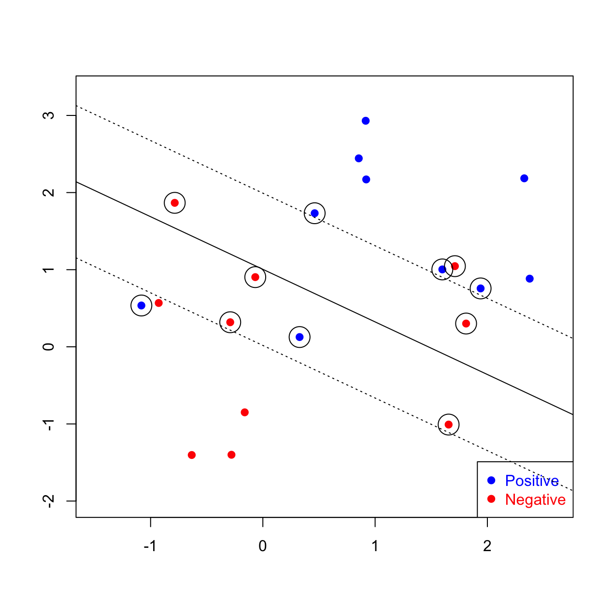
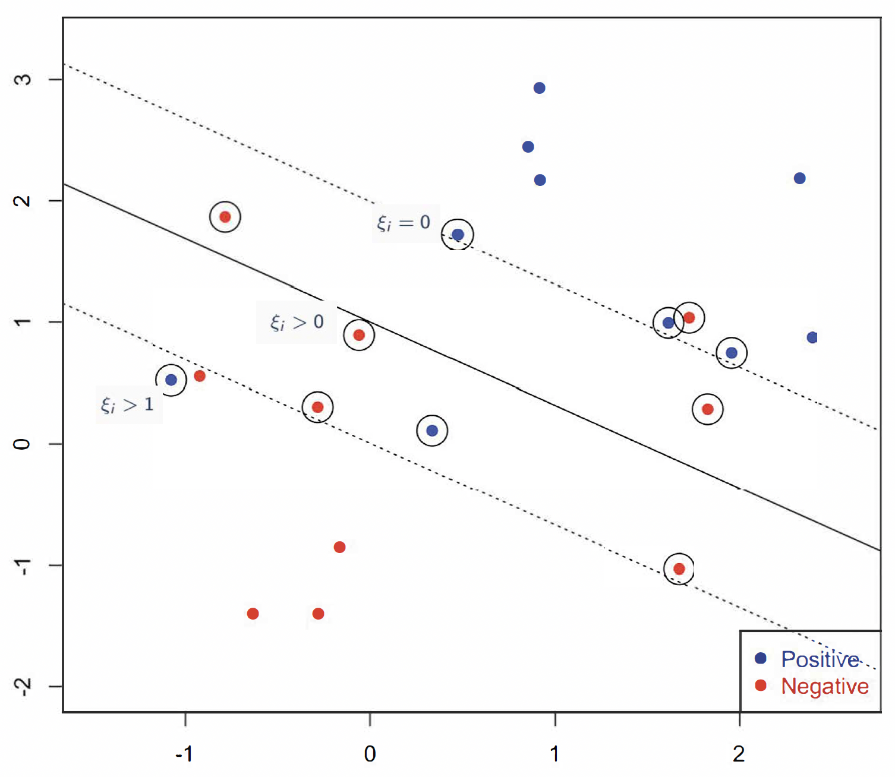
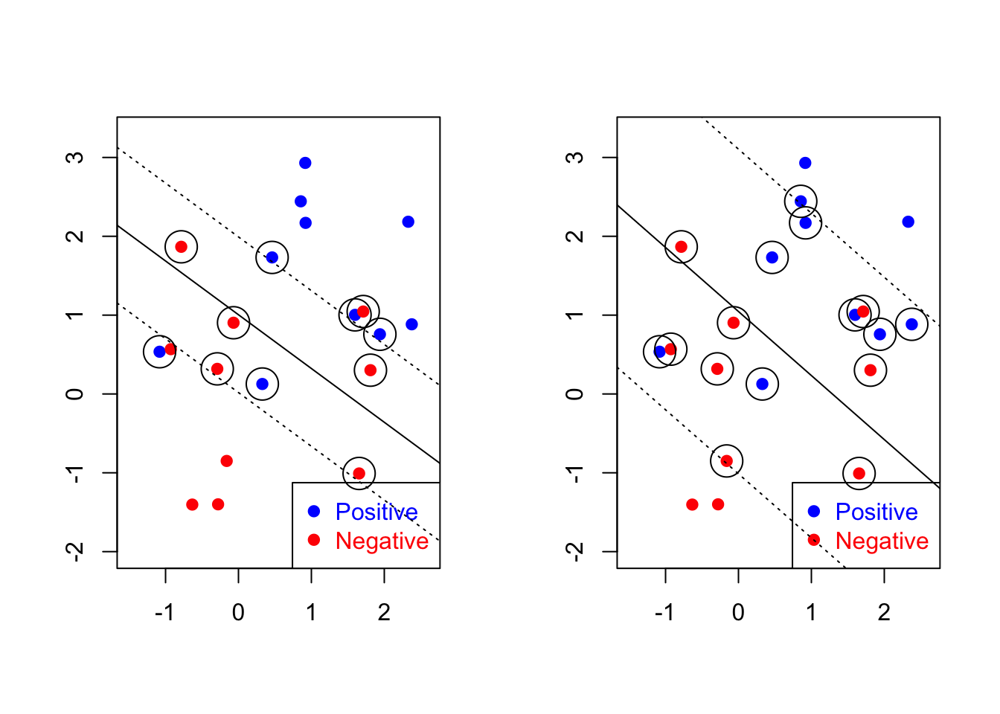

8.2 Linear SVM in non-Separable Case: Slack Variables
Non-separable means that the ``zero”-error is not attainable which means that we cannot achieve a perfect separation of the two classes. In this case the original SVM cannot find a solution.

Therefore, we introduce slack variables denoted by \(\{\xi_i\}_{i=1}^{n}\) to account for the misclassified observations. Therefore, the constraint in the previous optimization problem now becomes \[y_i (x^T \beta + \beta_0) \geq (1-\xi_i)\] for a positive \(\xi_i\).

Figure 8.3: Slack Variables in Linearly Non-Separable Case
So, for the slack variables \(\xi_i\), we have that: * When \(\xi=0\), the observation is lying at the correct side, with enough margin.
When \(1>\xi>0\), the observation is lying at the correct side, but the margin is not sufficiently large.
When \(\xi>1\), the observation is lying on the wrong side of the separation hyperplane.
\[\text{minimize } \,\,\, \frac{1}{2} ||\beta||^2 + C \sum_{i=1}^{n} \xi_i\] \[\text{subject to } \,\,\, y_i (x^T \beta + \beta_0) \geq (1-\xi_i), \,i=1, \ldots, n\] \[\xi_i \geq 0, \,i=1, \ldots, n\]
This optimization reflects the trade-off between the margin \(2/||\beta||^2\) (the gain) and the sum of all the positive slack variables, \(\sum_i \xi\), (the cost you pay). \(C>0\) is a tuning parameter for “cost”, that is it controls the emphasis on the slack variable. It essentially balances the error and margin width. Large \(C\) will be less tolerable on having positive slacks (in the separable case \(C=\infty\)). In practice, \(C\) is usually determined with cross-validation.
Solving SVM with Slack Variables
The new optimization problem adds more constraints, and the Lagrangian, \(\mathcal{L}(\beta, \beta_0, \alpha, \xi)\), of the primal problem is now written as \[\frac{1}{2} ||\beta||^2 + C \sum_{i=1}^{n} \xi_i - \sum_{i=1}^{n} \alpha_i \biggl \{ y_i (x_i^T \beta + \beta_0) - (1-\xi_i) \biggr \} - \sum_{i=1}^{n} \gamma_i \xi_i\] where \(\alpha_i\), \(\gamma_i \geq 0\). The solution is along the same lines as before. So, we compute the derivatives with respect to \(\beta\), \(\beta_0\) and \(\xi_i\):
\[\begin{align*} \nabla_{\beta}\mathcal{L} = 0 \,\, &\Leftrightarrow \,\,\,\, \beta - \sum_{i=1}^{n} \alpha_i y_i x_i =0\\ \nabla_{\beta_0}\mathcal{L} = 0 \,\, &\Leftrightarrow \,\,\,\, \sum_{i=1}^{n} \alpha_i y_i =0\\ \nabla_{\xi_i}\mathcal{L} = 0 \,\, &\Leftrightarrow \,\,\,\, C - \alpha_i - \gamma_i =0 \end{align*}\]
Substituting them back into the Lagrangian, we obtain the dual form:
\[\max_{\alpha}\sum_{i=1}^{n} \alpha_i - \frac{1}{2} \sum_{i,j=1}^{n} y_i \;y_j \;\alpha_i \;\alpha_j\; \langle x_i, x_j \rangle \] \[\text{subject to }\, 0 \leq \alpha_i \leq C,\, i=1, \ldots, n\] \[\sum_{i=1}^n \alpha_i y_i = 0\]
where here the inner product \(\langle x_i, x_j \rangle\) is equal to \(x_i^T x_j\).
We can still obtain \(\hat{\beta}\) as \[\hat{\beta} = \sum_{i=1}^{n} \alpha_i y_i x_i\]
The observations with \(0 < \alpha_i < C\) are the observations that lie on the margin. To calculate \(\hat{\beta}_0\), we need to obtain the observations that lie exactly on the margin. Based on the complementary slackness and dual feasibility of the KKT condition, we need \[\begin{align*} \alpha_i \Bigl \{y_i (x_i^T \beta + \beta_0) - (1-\xi_i) \Bigr\}&=0\\ C \xi_i &=0\\ y_i (x_i^T \beta + \beta_0) - (1-\xi_i) &\geq 0 \end{align*}\]
Using this approach, we essentially consider three sets of observations:
Useless points: \(\alpha_i=0\) and \(\xi_i=0\).
Support vectors: \(0<\alpha_i <C\) and \(\xi_i=0\).
On wrong side: \(\alpha_i=C\) and \(\xi_i = 1-y_i(x_i^T \beta - \beta_0)\).
After obtaining the support vectors, we can extract the ones on the positive side and the negative side. We can calculate \(y_i(x_i^T \beta)\) for them separately, and the separating line (with \(\hat{\beta}_0\)) lies in the middle of them.
In the following plots, we illustrate the results for two different cost parameters (\(C=1000\) to the left and \(C=0.1\) to the right):

Large \(C\) puts more weight on misclassification rate than margin width. Small \(C\) puts more attention on data further away from the boundary.
It is worth noting that this new optimization can also be applied in separable cases, depending on the magnitude of \(C\). In some cases, we might also be willing to allow some points to cross the dahsed line if it leads to a significant increase in the margin, and the parameter \(C\) controls this trade-off.